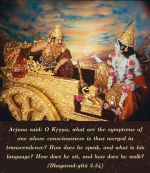
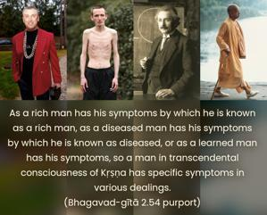
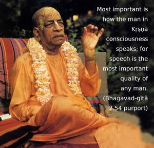
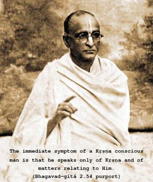

Arjuna said: O Kṛṣṇa, what are the symptoms of one whose consciousness is thus merged in transcendence? How does he speak, and what is his language? How does he sit, and how does he walk?




As there are symptoms for each and every man, in terms of his particular situation, similarly one who is Kṛṣṇa conscious has his particular nature – talking, walking, thinking, feeling, etc. As a rich man has his symptoms by which he is known as a rich man, as a diseased man has his symptoms by which he is known as diseased, or as a learned man has his symptoms, so a man in transcendental consciousness of Kṛṣṇa has specific symptoms in various dealings. One can know his specific symptoms from the Bhagavad-gītā. Most important is how the man in Kṛṣṇa consciousness speaks; for speech is the most important quality of any man. It is said that a fool is undiscovered as long as he does not speak, and certainly a well-dressed fool cannot be identified unless he speaks, but as soon as he speaks, he reveals himself at once. The immediate symptom of a Kṛṣṇa conscious man is that he speaks only of Kṛṣṇa and of matters relating to Him. Other symptoms then automatically follow, as stated below.